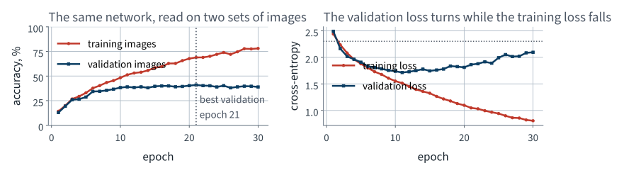
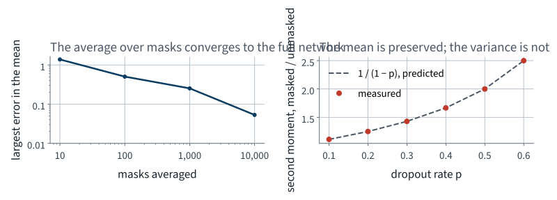
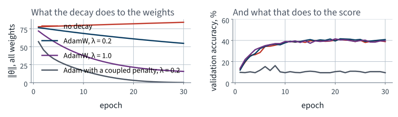
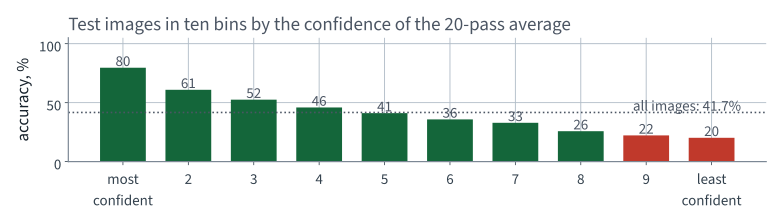
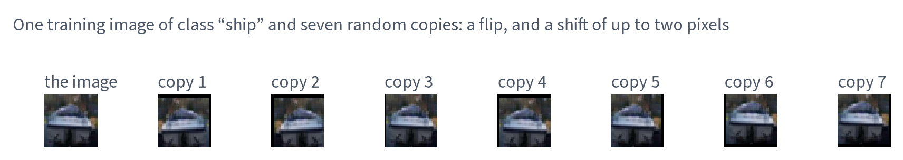
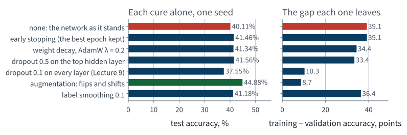
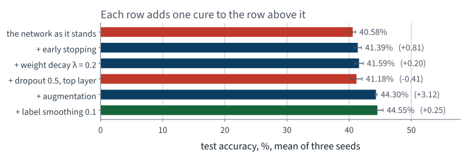
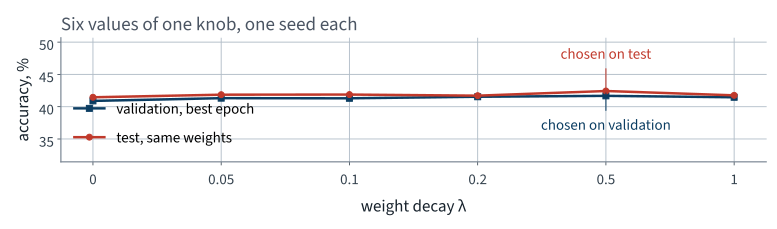

CIFAR-10
Lecture 10 Géron Ch. 11
Applications of Machine Learning
BSc Mathematics of Artificial Intelligence · Third year
Lecture 9 took a twenty-layer network that sat at chance and repaired it:
Linear → BatchNorm →
ReLU, He initialisation, a linear head of 10 outputs. Cross-entropy,
Adam at 0.001, batches of 128, clipping at 1.0. The same 10,000 training
images and 5,000 validation images, the same seed — and
30 epochs instead of 20.
No learning-rate schedule this time: a schedule fixes the number of steps in advance, and one of today’s cures is to stop when the validation set says so.
One new column in the log: the accuracy on the training images after every epoch, measured in evaluation mode on all 10,000 of them, beside the validation accuracy.

The network is still learning. It is learning these ten thousand images.
| Epoch | Training accuracy | Validation accuracy |
|---|---|---|
| 20 — where Lecture 9 stopped | 67.71% | 40.26% |
| 21 — the best validation epoch | 68.90% | 40.90% |
| 30 — the last: a gap of 39.15 points | 78.05% | 38.90% |
The error on new images that comes from fitting the particular sample — which pixels this frog has, rather than what a frog looks like. The arithmetic of why the network can:
| Free parameters | 504,210 |
| Training images | 10,000 |
| Parameters per training image | 50.4 |
| Bits of label information in the training set, $10{,}000 \cdot \log_2 10$ | 33,219 |
Half a million weights can store thirty thousand bits many times over. Given enough epochs, they will.
Lecture 5 met the same thing in a tree grown to purity, and averaged it away with a forest. A network has no cheap forest — but one of today’s cures turns out to be one.
| Cure | What it constrains | The knob |
|---|---|---|
| Early stopping | how far the fit runs | the epoch, chosen on validation |
| Weight decay | the size of the weights | $\lambda$ |
| Dropout | which units may rely on which | $p$, and which layers |
| Data augmentation | the function: it must give the same answer on an image and its copies | which transforms |
| Label smoothing | the target: no logit is asked to be infinite | $\varepsilon$ |
Each one trades a little bias — the constraint may be wrong — for less variance. Each has a knob, and every knob is set on the validation set. The last slide before the design exercise is about what happens when it is not.
At every training step, each hidden unit is set to zero with probability $p$, independently. At test time nothing is dropped.
layers += [nn.Linear(prev, 100), nn.BatchNorm1d(100), nn.ReLU()]
if dropout and i >= DEPTH - top: # the top hidden layers only
layers.append(nn.Dropout(dropout)) # p: the DROP rate, not the keep rate
net.train() # masks sampled, kept units scaled by 1/(1 - p)
net.eval() # no masks, no scaling: the full networkTwo things to settle before it can be used: what the network without masks computes, and why the kept units are rescaled. Both are the derivation.
A mask $\mathbf m \in \{0,1\}^n$ chooses which units survive. Each choice is a different, smaller network — a thinned network — and all of them share the same weights. One training step samples one mask, runs that thinned network forward and backward, and updates the shared weights.
So almost every thinned network is trained zero times. What makes this work is that they share weights — a weight that helps one thinned network helps most of them — and the question becomes what the full network, run without masks, has to do with their average.
One unit of the next layer sees $z = \sum_j w_j a_j$ from activations $a_j$. Under a mask $m_j \sim \text{Bernoulli}(1-p)$, independent across $j$,
$$\tilde z = \sum_j m_j\, w_j\, a_j, \qquad \mathbb E[\tilde z] = \sum_j \mathbb E[m_j]\, w_j a_j = (1-p)\, z$$by linearity of expectation, with the $a_j$ and $w_j$ held fixed. Train with masks and run without them, and every pre-activation is $1/(1-p)$ times larger than anything the weights were trained on.
For one term, $m_j^2 = m_j$ because $m_j \in \{0, 1\}$, so
$$\mathbb E\!\left[\Big(\frac{m_j a_j}{1-p}\Big)^{2}\right] = \frac{\mathbb E[m_j]\, a_j^2}{(1-p)^2} = \frac{a_j^2}{1-p}$$Every dropout layer multiplies the second moment of the signal passing through it by $1/(1-p)$. The expectation is right; the spread around it is not, and on a deep stack it compounds:
| Dropout on | $p$ | Factor on the second moment, $(1-p)^{-L}$ |
|---|---|---|
| one layer | 0.5 | 2 |
| all twenty layers | 0.1 | 8.23 |
| all twenty layers | 0.5 | 1,048,576 |
Lecture 9’s argument about $\rho$, again: a factor applied twenty times is a different thing from a factor applied once. Dropout goes on the top layer or two.

On the last hidden layer, 20,000 masks at $p = 0.5$: the average is within 0.0433 of $z$ on pre-activations of mean size 1.999, and the second moment is 2.000 times the unmasked one.
Add $\tfrac{\lambda}{2}\lVert\theta\rVert^2$ to the loss. Its gradient is $\lambda\theta$, so one gradient step is
$$\theta \;\leftarrow\; \theta - \eta\,(\nabla L + \lambda\theta) \;=\; (1 - \eta\lambda)\,\theta \;-\; \eta\nabla L$$The $\ell_2$ penalty and the per-step shrinkage are the same thing — for gradient descent. With $\eta = 0.001$ and $\lambda = 0.2$ the factor is 0.9998 per step; over the 2,370 steps of a thirty-epoch run a weight that receives no gradient shrinks to 0.62 of itself. A weight that earns its size keeps it; one that does not, decays.
AnimationAdam divides each coordinate’s step by a running estimate of its gradient’s size. Put $\lambda\theta$ into the gradient and it is divided too:
| The update | What $\lambda$ does | |
|---|---|---|
Adam(weight_decay=λ) — coupled | $\theta \leftarrow \theta - \eta\,\dfrac{\widehat m(\nabla L + \lambda\theta)}{\sqrt{\widehat v} + \epsilon}$ | normalised away: every weight moves by about $\eta$, whatever its size |
AdamW(weight_decay=λ) — decoupled | $\theta \leftarrow (1-\eta\lambda)\,\theta - \eta\,\dfrac{\widehat m(\nabla L)}{\sqrt{\widehat v} + \epsilon}$ | the shrinkage, as derived |
One step with a zero loss gradient, $\eta = 0.001$, $\lambda = 0.2$, so only the decay moves anything:
| 0.5 becomes | 0.0005 becomes | |
|---|---|---|
| SGD, AdamW | 0.4999 | 0.0004999 |
| Adam, coupled | 0.4990 | −0.0005 |
if h["val_acc"][-1] > h["best_val"]: # chosen on VALIDATION
h["best_val"] = h["val_acc"][-1]
h["best_epoch"] = ep + 1
h["best_state"] = {k: v.detach().clone() # a COPY: training goes on
for k, v in net.state_dict().items()}
...
best.load_state_dict(h["best_state"])
h["test_at_best"] = accuracy(best, Xt, yt) # what you ship, scored once| Weights shipped | Test accuracy |
|---|---|
| epoch 30, the last | 40.11% |
| epoch 21, the best on validation | 41.46% |
+1.35 points, and nine epochs of training not spent memorising.
It did not close the gap: at epoch 21 the training accuracy was already 68.90%. Early stopping stops the damage; it does not constrain the model. The validation loss had turned ten epochs earlier still, at epoch 11: a reasonable rule would have stopped there, and the two rules land within a point of each other. The validation set decides; the test set is read once.
optim = torch.optim.AdamW(net.parameters(), lr=1e-3, weight_decay=0.2)| $\lVert\theta\rVert$ after epoch 30 | Training | Validation | Gap | Test | |
|---|---|---|---|---|---|
| no decay | 83.9 | 78.05% | 38.90% | 39.15 | 40.11% |
| AdamW, $\lambda = 0.2$ | 54.6 | 75.19% | 40.80% | 34.39 | 41.34% |
The weights are a third smaller, the gap is five points narrower, the test accuracy is a point higher — a point being about the seed-to-seed spread, as the ladder will show. Without decay the norm grew over the run, from 77.7 after the first epoch to 83.9.

Same $\lambda$, two spellings: AdamW shrinks the weights; Adam with a coupled penalty erases them.
AdamW is the second row of the
previous table. The optimiser name is the whole differencenet = make_net(dropout=0.5, top=1) # after the top hidden layer only
net = make_net(dropout=0.1, top=20) # Lecture 9's last rung: every layer| Train, epoch 20 | Val, epoch 20 | Train, epoch 30 | Val, epoch 30 | Gap | Test | |
|---|---|---|---|---|---|---|
| none | 67.71% | 40.26% | 78.05% | 38.90% | 39.15 | 40.11% |
| 0.5 on the top layer | — | — | 74.62% | 41.24% | 33.38 | 41.56% |
| 0.1 on every layer | 39.09% | 33.90% | 47.39% | 37.08% | 10.31 | 37.55% |
On the top layer: a narrower gap and a point and a half on the test set — a modest cure on a network this narrow. On every layer: the narrowest gap on the slide, bought by not learning.
That ladder stopped at epoch 20 and read dropout 0.1 on every layer as a loss of seven points. Now the whole curve is in view:
Dropout on every layer of a deep, narrow stack is not a regulariser. It is a slower learner with a narrower gap.
Lecture 9 read that rung as a regulariser added to a network that was not overfitting. The training column, which that deck did not log, says it was overfitting already; the rung failed for the reason on the previous slide.
net.eval() # BatchNorm: running statistics, frozen
for m in net:
if isinstance(m, nn.Dropout):
m.train() # Dropout: masks on
probs = sum(F.softmax(net(X), 1) for _ in range(T)) / T # T = 20 passes
pred, conf = probs.argmax(1), probs.max(1).values
Masks off: 41.81%. Twenty passes averaged: 41.69% — no better. But the top decile by confidence is right 79.6% of the time and the bottom decile 20.2%; answer the 80% most confident and the accuracy on what is answered is 46.81%.
A photograph flipped left-to-right, or shifted by two pixels, is a photograph of the same thing. Train on random copies and the network is told so: the function it fits has to give the same answer on an image and its copies, which rules out the part of the hypothesis space that was memorising pixel positions.
def augment(xb, g): # on standardised rows, as images
img = xb.view(n, 32, 32, 3)
flip = torch.rand(n, generator=g) < 0.5
img = torch.where(flip[:, None, None, None], img.flip(2), img)
padded = F.pad(img.permute(0, 3, 1, 2), (2, 2, 2, 2)) # 36 x 36
... # a random 32 x 32 window of it
xb = augment(Xf[idx], g) # a FRESH copy of every batch, every stepWhich transforms is a statement about the data: a flipped digit is a different digit, a flipped frog is a frog.

The network never sees the same batch twice. It cannot memorise what it never sees twice.
| Training | Validation | Gap | Test | Same answer on an image and its flip | |
|---|---|---|---|---|---|
| none | 78.05% | 38.90% | 39.15 | 40.11% | 52.91% |
| flips and shifts | 53.26% | 44.58% | 8.68 | 44.88% | 71.77% |
+4.77 points on the test set, and the gap cut from thirty-nine points to nine. The one cure that did more than narrow the gap.
The last column is the constraint, measured: without augmentation the network changes its answer on half the test images when they are flipped — it had learned where the pixels were. With it, the flip is nearly invisible to it.
transform
object shared by both loaders. The usual symptom is nothing: a
plausible number, a little lowlossf = nn.CrossEntropyLoss(label_smoothing=0.1)| Training loss, epoch 30 | Training | Validation | Gap | Test | |
|---|---|---|---|---|---|
| one-hot targets | 0.8052 | 78.05% | 38.90% | 39.15 | 40.11% |
| smoothed, $\varepsilon = 0.1$ | 1.1662 | 76.32% | 39.92% | 36.40 | 41.18% |
The training loss is higher by construction: the target can no longer be reached by driving one logit to infinity, which was the mechanism that kept the training loss falling after the validation loss had turned. A point on the test set; the gap barely moves.
| Cure | Training | Validation | Gap | Test |
|---|---|---|---|---|
| none: the network as it stands | 78.05% | 38.90% | 39.15 | 40.11% |
| early stopping, the best epoch kept | 78.05% | 38.90% | 39.15 | 41.46% |
| weight decay, AdamW $\lambda = 0.2$ | 75.19% | 40.80% | 34.39 | 41.34% |
| dropout 0.5 on the top layer | 74.62% | 41.24% | 33.38 | 41.56% |
| dropout 0.1 on every layer | 47.39% | 37.08% | 10.31 | 37.55% |
| augmentation: flips and shifts | 53.26% | 44.58% | 8.68 | 44.88% |
| label smoothing 0.1 | 76.32% | 39.92% | 36.40 | 41.18% |
Every cure narrows the gap. One of them raises the test accuracy by more than a point. Narrowing the gap and generalising better are not the same thing: a network that learns nothing has no gap at all.

The right panel is what every cure does. The left panel is what you are paid for.
| Configuration | Test accuracy | sd over 3 seeds | Change | Gap |
|---|---|---|---|---|
| the network as it stands, last epoch | 40.58% | ±0.47 | — | 38.8 |
| + early stopping | 41.39% | ±0.58 | +0.81 (noise) | 38.8 |
| + weight decay, $\lambda = 0.2$ | 41.59% | ±0.67 | +0.20 (noise) | 34.8 |
| + dropout 0.5, top layer | 41.18% | ±0.92 | −0.41 (noise) | 30.1 |
| + augmentation | 44.30% | ±0.18 | +3.12 | 6.5 |
| + label smoothing 0.1 | 44.55% | ±0.90 | +0.25 (noise) | 6.7 |
Typical spread, the mean of the sd column: 0.62 points. One rung clears twice that: augmentation, +3.12. From the second rung on, every rung is read at its best validation epoch, because early stopping is on the ladder and stays on.

Four points from the whole ladder, three of them from one rung — and that rung was the only constraint on the function rather than on the weights.
| Accuracy points | |
|---|---|
| The largest single step — augmentation | +3.12 |
| The last rung against the first | +3.97 |
| The other four rungs together | +0.85 |
| The gap, first rung to last | 38.8 → 6.7 |
Every cure closed the gap. One of them raised the score.
Which is the answer to “should I add dropout, or weight decay, or stop early?” — yes, cheaply, and do not expect much. The question with a large answer is “what does the network not need to learn?”, and augmentation is how you tell it. Lecture 12 builds that invariance into the architecture instead, and the gain is larger again.
Six values of $\lambda$, one seed each, every run read at its best validation epoch. Two ways to choose:
| $\lambda$ | 0 | 0.05 | 0.1 | 0.2 | 0.5 | 1.0 |
|---|---|---|---|---|---|---|
| validation, best epoch | 40.90% | 41.32% | 41.30% | 41.54% | 41.68% | 41.46% |
| test, same weights | 41.46% | 41.86% | 41.88% | 41.71% | 42.43% | 41.76% |

Six numbers within a point and a half of each other, on one seed. Nobody can read a winner off this plot. The validation set may choose one; the test set may only confirm it, once.
| Always | Usually | Where it fits |
|---|---|---|
| early stopping on a validation metric, best weights kept | AdamW with a small decay, $\lambda$ around 0.01 to 0.1 for an adaptive optimiser | dropout at 0.2–0.5 on wide, top layers; little on narrow or convolutional ones |
| augmentation that matches the data’s invariances, in the training path only | label smoothing, 0.1 | Monte Carlo dropout where a confidence will be acted on |
| Symptom | Cause | Lecture |
|---|---|---|
| loss flat at $\ln 10$, nothing raised | gradients vanishing by a constant factor per layer | 9 |
| training accuracy climbing, validation flat | variance: the network memorises the sample | 10 |
| a regularised network at chance | the penalty inside Adam, normalised away | 10 |
| dropout makes everything worse | on every layer of a deep stack: the second moment compounds | 10 |
| a plausible number, a little low | the training transform on the test loader | 10 |
| a published number nobody can reproduce | a knob chosen on the test set | 10 |
Four of today’s five raise nothing and print a number. The notebook’s answer to all of them is the same: log the training accuracy beside the validation accuracy, and read both.
Eighteen cells, on CPU. The repaired network trained for thirty epochs and the two curves; the dropout expectation and the zero-gradient decay step, checked numerically; each cure alone; Monte Carlo dropout with the confidence deciles; the flip-agreement and the augmented-evaluator measurement; the three-seed ladder; and the sweep of $\lambda$ with both choices printed side by side.
| Run first | Then change | And see |
|---|---|---|
| Section 5, the plain run | the epochs to 60 | the training accuracy keeps climbing; the validation accuracy does not |
| Section 11, dropout | top to 20 at $p = 0.5$ | a million on the second moment: the validation curve stays at chance |
| Section 17, the sweep | add 2.0 and 5.0 to the grid | the validation choice does not move; the optimism cannot fall |
The thread count is pinned to four and the device is the CPU, so that two cells can be compared to two decimals. On another CPU the numbers land a point or two away; every conclusion survives that.
Design exercise · in the manner of an ML system-design interview
Nine steps follow, each with the pitfall that catches a first attempt and what to do about it. Today’s method is at the centre: a network with far more parameters than images, and the cures that keep it honest.
| Pitfall | What happens | What to do |
|---|---|---|
| Two kinds of label | some photographs carry a biopsy result, most carry one dermatologist’s visual verdict; the second is noisier and the two are mixed | keep the label source as a column; evaluate on biopsy-confirmed rows; train on both, smoothing the visual ones |
| Disagreement | two dermatologists disagree on a fraction of borderline lesions; one opinion per image hides that | double-label a slice, measure the agreement, and treat it as the ceiling any model can reach |
| The clinic’s camera | clinic photographs are taken with a dermatoscope under ring light; the user’s are a phone in a bathroom | collect a labelled set of phone photographs before shipping, or the training set is of a different task |
Write down what a refer label means and who gave it. The regulator will ask; so will the lawyer.
Clinic photographs, label source kept → split by patient → augmentation agreed with a dermatologist, training path only → pretrained backbone, dropout, AdamW, early stopping on validation sensitivity → Monte Carlo dropout and a third answer → threshold signed off, test set read once → audited release → monitor, retrain, re-evaluate.
| Pitfall | Address it by |
|---|---|
| Accuracy as the metric | sensitivity fixed first, as a clinical requirement |
| Clinic labels, phone photographs | a labelled phone set before shipping; the label source kept |
| A split by photograph | a split by patient, stratified by clinic |
| Augmentation that alters the signal | transforms chosen with a dermatologist, tested on validation |
| Shipping the last epoch | the validation curve from the first run; the best weights kept |
| A confident verdict on an unseen kind of image | Monte Carlo dropout; abstain and refer |
| The best of a dozen test scores | one test set, read once, by someone else |
| Retraining on the model’s own referrals | a sampled review of every answer; a changed model is a changed device |
| Topic | Chapter |
|---|---|
| Overfitting, and avoiding it through regularisation | 11 |
| $\ell_1$ and $\ell_2$ regularisation; AdamW | 11 |
| Dropout, and Monte Carlo dropout | 11 |
| Early stopping | 11 |
| Data augmentation | 12 |
| The train / validation / test split, and why the test set is read once | 2 |
Not presented — for afterwards
five, in the style of the written paper
Solutions on Lecture 11’s deck.
Solutions on Lecture 11’s deck.
The five set at the end of Lecture 9
not part of this lecture
1. One layer multiplies the standard deviation of the backward signal by…
They multiply it by $\rho^{L-1}$ — $L-1$ steps between the first gradient and the last — so anything but 1 vanishes or explodes geometrically.
2. Preserving the forward signal asks for $\operatorname{Var}(w) = 1/n_{\text{in}}$ and preserving the gradient…
They agree only when $n_{\text{in}} = n_{\text{out}}$; Glorot takes the harmonic mean, $2/(n_{\text{in}}+n_{\text{out}})$.
3. He initialisation doubles the weight variance for ReLU. Derive the factor of two in one line.
ReLU zeroes half of a symmetric zero-mean input, so $\mathbb{E}[\text{ReLU}(z)^2] = \tfrac12\mathbb{E}[z^2]$.
4. A gradient profile that is a straight line on a log axis tells you something a curved one does not. State…
The attenuation is the same factor at every layer, so it is the initialisation rather than one bad layer.
5. Gradient clipping is applied to a network whose gradients are fifteen orders of magnitude too small. Predict…
No effect — clipping bounds gradients that are too large.
Lecture 11 · Lecture notes
A network with no labels: compress an image to a code and reconstruct it
A linear autoencoder recovers the principal subspace, derived
The code as a representation: retrieval, clustering, anomalies
Run the Lecture 10 notebook first